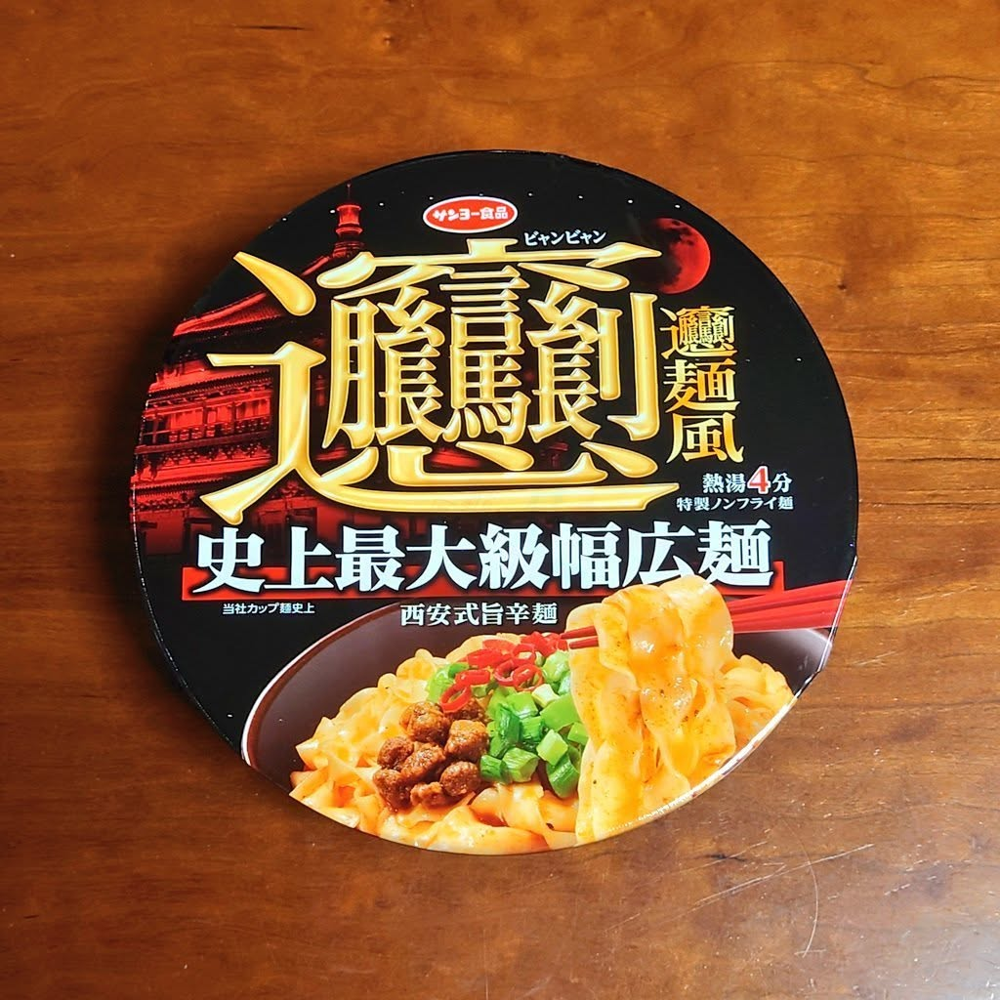

Biáng: 58 Strokes for a Bowl of Noodles
- In Xi'an, China, a humble bowl of noodles has a name written with one of the most complicated Chinese characters in everyday use.
- Its traditional form has 58 strokes, combining horses, hearts, moons, and other familiar characters into one extraordinary symbol.
- For years, computers couldn't properly handle it. Only in 2020 did the character finally receive an official place in Unicode.

Contents
A bowl of noodles with an impossible name
In Xi'an, the historic capital of several Chinese dynasties, there is a famous noodle dish.
The noodles are extraordinarily wide, often as broad as a belt.
Made from wheat dough, they are stretched and slapped against a work surface before being cooked.
They are called:
𰻞𰻞麵 / 𰻝𰻝面
Biángbiáng miàn
For generations, these thick, hearty noodles were humble local food, associated with the everyday lives of people in Shaanxi.
Their belt-like width even earned them a place among the famous 陕西八大怪, the "Eight Curiosities of Shaanxi."
But what eventually attracted attention far beyond the region was not just the noodles.
It was the character on the restaurant sign.
𰻞
Biáng
58 strokes.
For comparison, the Chinese character 一 has just one stroke.
And the remarkable thing is that this enormous character represents just one syllable.
So what on earth is hiding inside it?
A horse, two long things, and a heart
At first glance, 𰻞 looks almost impossible to write.
But look more carefully.
Most of its components are perfectly ordinary Chinese characters.
At the center stands:
言 (yán), speech.
On either side is:
幺 (yāo), tiny or small.
Below them is a horse:
馬 (mǎ).
Flanked by two copies of:
長 (cháng / zhǎng), long or grow.
And around this strange gathering are several other components.
- 月 (yuè), moon
- 心 (xīn), heart
- 刂, knife component
- 穴 (xué), cave
- 辶, walking or movement component
The whole arrangement is wrapped by 辶, curling around the left and bottom.
Imagine trying to fit all of that into one square!
Yet these familiar components make the character easier to remember.
And people in Shaanxi developed a wonderfully imaginative method for doing exactly that.
A song to remember 58 strokes
Rather than memorizing every stroke individually, people recite a rhyme.
There are several versions, but one well-known form begins:
一点飞上天
黄河两道弯
八字大张口
言字往里走
A dot flies into the sky.
The Yellow River makes two bends.
The character 八 opens its mouth wide.
And 言 walks inside.
Then the rhyme introduces the twisting 幺 components, the two 長 characters, and a mighty horse sitting in the middle.
The heart goes below.
The moon stands beside it.
And at the end comes a delightful image:
推个车车进咸阳
"Push a cart into Xianyang."
Xianyang was the capital of the ancient Qin state and empire, near modern Xi'an.
The cart in the rhyme helps the writer remember the sweeping movement component 辶 surrounding the character.
An entire landscape, complete with a river, a horse, and a journey to an ancient capital, is packed into a single written syllable.
But where did this extraordinary character come from?
Did someone really invent this during the Qin dynasty?
According to one legend, the character was created by 李斯 (Lǐ Sī), the famous Qin dynasty chancellor associated with the standardization of Chinese writing.
That would make it more than 2,200 years old.
A spectacular story.
But there is a problem.
The character does not appear in the famous 康熙字典 (Kangxi Dictionary), compiled in the early eighteenth century.
Nor is it found in many standard Chinese dictionaries.
Its true origin remains uncertain.
Another popular explanation says that biáng imitates the sound of dough being slapped against the table.
Biáng!
Biáng!
The sound of making noodles became the name of the noodles themselves.
Whether that fully explains the word's origin is unclear.
And even the character has no single universally accepted handwritten form.
More than twenty traditional variants have been documented, with stroke counts ranging roughly from 56 to over 70.
The familiar traditional version has 58 strokes.
There is also a simplified form:
𰻝
In other words, this extraordinary character was never as standardized as most everyday Chinese characters.
And that created a very modern problem.
The character that computers couldn't type
For years, noodle shops could write 𰻞 on their signs, but computers had no standardized character code for it.
Restaurant owners often used images instead of text.
Others wrote the name in Roman letters:
biangbiang面
Or substituted ordinary Chinese characters with similar sounds, such as:
彪彪面
冰冰面
The noodles existed.
The word existed.
The character appeared on signs across Xi'an.
But in the digital world, it had no official place.
In 2006, Unicode specialist John H. Jenkins submitted a proposal involving the character following correspondence with Lee Collins.
Even describing its complicated structure was difficult. An early representation exceeded the permitted length for the character-description format and omitted the 心 component.
Further proposals and years of standardization work followed, including work by 范銘 (Fan Ming).
Finally, in March 2020, Unicode 13.0 officially included both forms.
𰻞 Traditional
Unicode: U+30EDE
58 strokes
𰻝 Simplified
Unicode: U+30EDD
After years of existing on restaurant signs but not in standardized digital text, biáng finally had a home in Unicode.
Today, the characters can be copied, stored, and transmitted like other Unicode characters.
But there is still a catch.
Not every font supports them.
So if you see an empty box instead of the character, the problem may not be your computer.
It may simply be missing the right font.
One bowl of noodles, one extraordinary character
Think about the journey of 𰻞.
It began as the written name of a humble local dish.
Its structure became a puzzle.
Its strokes inspired a rhyme.
Its origin attracted legends involving ancient emperors and scholars.
And centuries later, it challenged the people building the world's digital writing standards.
All for a bowl of noodles.
Perhaps the most remarkable thing is that a character so complicated can represent something so ordinary.
Not an ancient philosophical concept.
Not a sacred text.
Not a royal title.
Just the sound and name of a noodle.
Sometimes, the most extraordinary Chinese character is hiding in the most ordinary place: a restaurant menu.